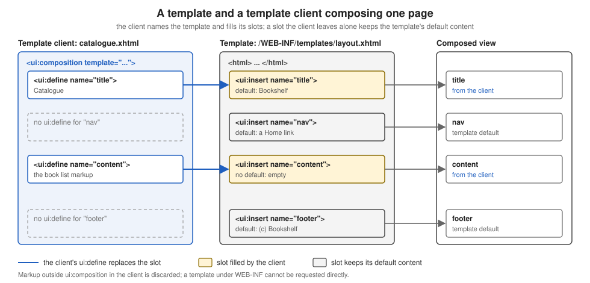

Facelets Templating
|
This content was generated with the assistance of AI and should be verified against the official documentation before being relied on in production. |
This page is written against Jakarta Faces 4.1 (API jakarta.faces-api 4.1.2, part of Jakarta EE 11), Eclipse Mojarra
4.1.17 and Apache MyFaces Core 4.1.4, with Java 17 or later. The Facelets namespace is jakarta.faces.facelets in
Faces 4.0 and later; Faces 4.0 behaves the same for everything below. Every snippet and every statement about the
rendered output was run for real: the files were deployed in a scratch Bookshelf WAR served by Tomcat 11.0.26 with
Weld 6.0.4.Final, once with Mojarra 4.1.17 and once with MyFaces 4.1.4, requested with curl, and the HTML shown or
described is what came back (checked on 2026-10-08). Where the two implementations answered differently the text says
so, and the differences are collected in Mojarra and MyFaces.
A web application is full of pages that share a skeleton: the same head, the same header, navigation and footer, with
only the middle changing. Facelets solves this with templating: one file, the template, writes the skeleton once
and marks the places where pages differ; every page, called a template client, names the template and supplies the
content for those places. The tags live in the ui library, whose prefix is conventionally ui. The page covers every tag of that library, in
the order a reader meets them: the template and its client, slots and their defaults, nested templates, the tags that
reuse a fragment, the tags that create components, the tags that remove or debug, the place of f:metadata in a
template, templates packaged in a JAR, and where Mojarra and MyFaces differ. How a Facelets file is turned into a view
is explained on the Facelets and XHTML views page.
The ui Tag Library at a Glance
The Facelets templating tag library has eleven tags. The last column was measured: a page that used every tag was built on both implementations and the component tree of the view was printed. A tag that is only a tag handler runs while the view is built and leaves nothing in the tree except the text it produced; a tag that is a component stays in the tree and is evaluated again on every request.
| Tag | Purpose | Attributes in the 4.1 VDL | In the component tree |
|---|---|---|---|
|
Root of a template client or of a reusable fragment; optionally applies a |
|
No |
|
Like |
|
No |
|
Names the content that fills one slot of a template. |
|
No |
|
A slot in a template; its body is the default content. Without a |
|
No |
|
Includes another Facelets file at this point. |
|
No |
|
Passes a variable to an included file or to a template. |
|
No |
|
Like |
|
Yes, one component for the tag |
|
Like |
|
Yes, one component for the tag |
|
Iterates its body over a collection, one set of children for all rows. |
|
Yes ( |
|
Deletes its body when the file is compiled. |
none |
No |
|
Adds the debug window script. |
|
Yes ( |
The measured tree of a page that used ui:include, ui:decorate, ui:define, ui:component, ui:fragment,
ui:remove, ui:repeat and ui:debug in a template client contained, below the body, only UIInstructions for the
text produced by the includes, defines and decorations, two components of the implementation’s ComponentRef class (one
for the ui:component and one for the ui:fragment), a UIRepeat and a UIDebug; the h:outputText inside
ui:remove was not there. ComponentRef is an implementation class, so a page should only rely on the tag, never on the
class.
Templates and Template Clients
A template is an ordinary XHTML Facelets file that contains one or more <ui:insert name="..."> elements. Each is
an insertion point (a slot) with a name. A template client is a view whose root is a <ui:composition> with a
template attribute holding the template’s path. Inside the composition, one <ui:define name="..."> per slot
supplies the content for that slot. When the view is built, Facelets loads the template, and each ui:insert is
replaced by the ui:define of the same name, or keeps its own body when the client defines nothing for it.

The Bookshelf keeps its template under /WEB-INF/templates/layout.xhtml. Files under WEB-INF can never be requested
directly by a browser, so a template can only be reached through the views that use it, which is the point:
<!DOCTYPE html>
<html xmlns="http://www.w3.org/1999/xhtml"
xmlns:h="jakarta.faces.html"
xmlns:ui="jakarta.faces.facelets">
<h:head>
<title><ui:insert name="title">Bookshelf</ui:insert></title>
</h:head>
<h:body>
<header>Bookshelf</header>
<nav>
<ui:insert name="nav">
<a href="index.xhtml">Home</a>
</ui:insert>
</nav>
<main>
<ui:insert name="content"/>
</main>
<footer>
<ui:insert name="footer">(c) Bookshelf</ui:insert>
</footer>
</h:body>
</html>The template declares four slots. title, nav and footer have default content between their tags; content has none.
A page that uses it:
<!DOCTYPE html>
<html xmlns="http://www.w3.org/1999/xhtml"
xmlns:h="jakarta.faces.html"
xmlns:ui="jakarta.faces.facelets">
<body>
this text is outside ui:composition and is discarded
<ui:composition template="/WEB-INF/templates/layout.xhtml">
<ui:define name="title">Catalogue</ui:define>
<ui:define name="content">
<p>The catalogue goes here.</p>
</ui:define>
</ui:composition>
</body>
</html>Requesting that view returned the composed page, with the client’s title and content and the template’s defaults for
nav and footer:
<!DOCTYPE html>
<html xmlns="http://www.w3.org/1999/xhtml"><head>
<title>Catalogue</title></head><body>
<header>Bookshelf</header>
<nav>
<a href="index.xhtml">Home</a>
</nav>
<main>
<p>The catalogue goes here.</p>
</main>
<footer>(c) Bookshelf
</footer></body>
</html>Three behaviours are worth remembering:
-
Everything outside
<ui:composition>is ignored. Thehtml,bodyand the loose text in the client above do not reach the output; the page’shtmlandheadcome from the template. That is why many applications start a client directly with<ui:composition ...>and nohtmlelement at all, as the specification’s own examples do, which also keeps the file small. Thehtmlwrapper above is only there so an editor can validate the markup. -
A
ui:defineis optional for every slot. A client that defines nothing still renders: each slot shows its default content, or nothing when it has none. -
Content sits in the client, scope and EL work as anywhere. Expressions inside a
ui:defineare evaluated against the client’s view, so#{msg['catalogue.title']}or#{catalogueBean.books}works the same as in a plain page. The EL itself is covered on the Expression Language page.
MyFaces 4.1.4 produced the same markup. In the Development project stage it also appends an empty div with the id
jakarta_faces_developmentstage_messages before </body>, a container for development-time messages that Mojarra
writes only when it has a message to show.
The template named by template is itself resolved when the view is built. If the path does not exist, the request fails
with an error page instead of rendering without the layout: Mojarra reported Invalid path : /WEB-INF/templates/missing.xhtml
with the file and column of the ui:composition, and MyFaces reported /WEB-INF/templates/missing.xhtml Not Found in
ExternalContext as a Resource. The same holds for a ui:include whose src does not exist.
ui:insert Without a Name
The name attribute of ui:insert is optional. According to the VDL, when no name is given the whole template client is
inserted. That makes a template that wraps whatever the client puts inside its ui:composition, with no ui:define at
all:
<ui:composition xmlns="http://www.w3.org/1999/xhtml" xmlns:ui="jakarta.faces.facelets">
<div class="wrap">[<ui:insert/>]</div>
</ui:composition><ui:composition template="/WEB-INF/templates/body-wrap.xhtml"
xmlns:ui="jakarta.faces.facelets">
<p>whole body of the client</p>
</ui:composition>Both implementations answered with <div class="wrap">[, a line break and the client’s paragraph, then ]</div>.
Use it for small wrappers (a boxed region, a card) where one slot is enough; as soon as a layout needs two regions,
named slots are clearer.
Source: Jakarta Faces 4.1 VDL: ui:insert
Default Content and Slots
The body of a ui:insert is its default. It is used exactly when the client has no ui:define of that name. This lets a
template evolve without breaking its clients: add a new slot with a sensible default and every existing page keeps
working; a page opts in by defining it.
<!-- in the template: a slot with a default -->
<ui:insert name="footer">(c) Bookshelf</ui:insert>
<!-- in one client: replace it for this page only -->
<ui:define name="footer">Last updated today</ui:define>A slot can hold any Facelets content, including components and further ui:insert tags, and defaults are not limited to
text. The nav slot above defaults to a link. The same page defined that way rendered Home unchanged until a client
defined its own nav.
Two limits to keep in mind. A slot is filled by name only: a template with two inserts of the same name,
[<ui:insert name="x">d1</ui:insert>][<ui:insert name="x">d2</ui:insert>], rendered [DEF][DEF] for a client with one
<ui:define name="x">DEF</ui:define>, on both implementations, so the definition is copied into every insert of that
name. And the definition cannot be partly overridden: a ui:define replaces the whole body of the slot,
default included, which is why a template that wants "default plus something" should expose a second, smaller slot
instead.
Multi-Level Templates
A template can itself be a template client. A second-level template names the site template with
<ui:composition template="...">, fills some of its slots with ui:define, and leaves room for its own clients by
putting new ui:insert elements inside those definitions. The Bookshelf uses this for every catalogue page, which share
a filter sidebar:
<ui:composition template="/WEB-INF/templates/layout.xhtml"
xmlns:ui="jakarta.faces.facelets">
<ui:define name="title">Catalogue - <ui:insert name="heading">Books</ui:insert></ui:define>
<ui:define name="content">
<aside>Filters</aside>
<section>
<ui:insert name="main">No books</ui:insert>
</section>
</ui:define>
</ui:composition><ui:composition template="/WEB-INF/templates/catalogue-layout.xhtml"
xmlns:ui="jakarta.faces.facelets">
<ui:define name="heading">Fiction</ui:define>
<ui:define name="main"><p>Dune</p></ui:define>
<ui:define name="footer">custom footer</ui:define>
</ui:composition>The result: the title slot of the site template received Catalogue - Fiction, the content slot received the sidebar
and a section holding Dune, and the footer slot was filled with custom footer even though the middle template never
mentions it. Slots of the outermost template are therefore reachable from any depth: the client defines footer and it
flows through the second level. The slots heading and main exist only in the middle template. A page that defines
nothing renders the defaults of every level (Catalogue - Books, No books and (c) Bookshelf).
Keep the chain shallow. Two levels, a site layout and a section layout, covers nearly every application; deeper chains make it hard to tell which file a slot comes from.
Reusing Fragments with ui:include and ui:param
<ui:include src="..."> inserts another Facelets file at that point. It is the right tool for a repeated piece of
markup that has no slots of its own, such as one row of the catalogue. The included file is normally a
<ui:composition> (or <ui:component>), whose content is what gets included. <ui:param name="..." value="..."/>
inside the ui:include passes a variable into it:
<ui:composition xmlns="http://www.w3.org/1999/xhtml"
xmlns:ui="jakarta.faces.facelets">
<li>#{label}: #{title}</li>
</ui:composition><ul>
<ui:repeat value="#{['Dune','Emma']}" var="t" varStatus="s">
<ui:include src="/WEB-INF/includes/book-line.xhtml">
<ui:param name="label" value="Book #{s.index + 1}"/>
<ui:param name="title" value="#{t}"/>
</ui:include>
</ui:repeat>
</ul>This rendered <li>Book 1: Dune</li> and <li>Book 2: Emma</li>. A few rules:
-
The
srcmay itself be an EL expression, so a page can include a fragment chosen when the view is built (see Paths, Run-Time Choice and Scope of ui:include). The path is relative to the including file unless it starts with/; use absolute paths from the web application root, as above, so a file can be moved without breaking its includers. -
A
ui:paramis an EL variable visible in the included file under itsname. It holds the expression, sovalue="#{t}"stays tied to the loop variable of the enclosingui:repeat. -
ui:paramalso appears insideui:decorateandui:compositionwith atemplate, to hand the same kind of variables to a template. A template reads them like any other EL variable (see Passing Parameters to a Template). -
A
ui:defineinside aui:includedoes not give the included file slots. Useui:decoratewith atemplatefor that (ui:decorate and ui:composition). When a fragment needs more than a few parameters or its own validation, a composite component, covered on the Composite Components page, is the better fit, and a reusable tag with attributes is covered on the tag files page.
Paths, Run-Time Choice and Scope of ui:include
Four properties of ui:include were measured on both implementations.
The file is chosen when the view is built. The src of ui:include is an EL expression evaluated by the tag handler,
so a condition on a request parameter or on an application-scoped value picks the file once per build:
<ui:include src="#{param.frag eq 'b' ? '/WEB-INF/includes/frag-b.xhtml' : '/WEB-INF/includes/frag-a.xhtml'}"/>/include.xhtml rendered fragment A and /include.xhtml?frag=b rendered fragment B, on Mojarra and MyFaces. Because
this is a build-time decision, do not base it on a value that the same request changes (see the
build time and render time page).
A relative path is relative to the including file. A file sub/a.xhtml included <ui:include src="b.xhtml"/>, and
both sub/b.xhtml and b.xhtml existed in the application root. Both implementations included sub/b.xhtml. The VDL
text describes the path as relative to the page that was originally loaded, which is not what happened; write absolute
paths and the question does not arise.
A ui:param is visible only inside the include. Next to the loop above, a #{label} written after the ui:include
rendered as an empty string, because label exists only for the included file.
No slots in an include. This included file declares a slot:
<ui:composition xmlns="http://www.w3.org/1999/xhtml" xmlns:ui="jakarta.faces.facelets">
<p>hello #{who} / extra=[<ui:insert name="extra">no extra</ui:insert>]</p>
</ui:composition><ui:include src="/WEB-INF/includes/with-slots.xhtml">
<ui:param name="who" value="reader"/>
<ui:define name="extra">EXTRA FROM CALLER</ui:define>
</ui:include>The parameter arrived (hello reader) but the slot kept its default: extra=[no extra], on both implementations. A
fragment with slots is a template, and its caller is a ui:decorate.
ui:decorate and ui:composition
<ui:decorate template="..."> applies a template to a part of a page instead of to a whole page. Unlike
ui:composition, it does not discard what surrounds it: the markup around the tag stays, and only the tag’s own content
is replaced by the template’s rendering. Its ui:define children fill the template’s slots just as in the page case.
<ui:composition xmlns="http://www.w3.org/1999/xhtml" xmlns:ui="jakarta.faces.facelets">
<div class="box"><h3>#{boxTitle}</h3><ui:insert name="body">empty box</ui:insert></div>
</ui:composition><ui:decorate template="/WEB-INF/includes/box.xhtml">
<ui:param name="boxTitle" value="Decorated"/>
<ui:define name="body">inside box</ui:define>
</ui:decorate>The output was <div class="box"><h3>Decorated</h3>inside box</div>, inside the page’s surrounding markup. The comparison
that sticks:
| Tag | What it does | What happens to surrounding markup |
|---|---|---|
|
Applies a template, or just trims, at the root of a file |
Everything outside the tag is discarded |
|
Applies a template to a region |
Everything around the tag is kept |
|
Like |
Everything outside the tag is discarded |
|
Like |
Everything around the tag is kept |
A ui:composition with no template attribute is useful for the files meant to be included, as book-line.xhtml above:
only the content of the composition is used, so the file can contain a full html wrapper, or a comment, for the editor’s
benefit.
The output of the decorated region was identical on Mojarra and MyFaces. The VDL defines ui:decorate as identical to
ui:composition except that it does not discard the content around it.
Passing Parameters to a Template
A template client can pass values to its template with ui:param as a direct child of ui:composition or
ui:decorate, next to the ui:define elements. The template reads them as ordinary EL variables, which is the way to
give a layout a page title, a section name or a flag without turning them into a slot:
<!DOCTYPE html>
<html xmlns="http://www.w3.org/1999/xhtml" xmlns:h="jakarta.faces.html" xmlns:ui="jakarta.faces.facelets">
<h:head><title>#{pageTitle}</title></h:head>
<h:body><h1>#{pageTitle}</h1><ui:insert name="content"/></h:body>
</html><ui:composition template="/WEB-INF/templates/param-tpl.xhtml"
xmlns:ui="jakarta.faces.facelets">
<ui:param name="pageTitle" value="Param title"/>
<ui:define name="content">content</ui:define>
</ui:composition>Both implementations produced <title>Param title</title> and <h1>Param title</h1> followed by the content. The value
is an expression, not a copy: value="#{catalogueBean.title}" is evaluated each time the template reads pageTitle. Use
a ui:param for a small value and a ui:define for markup.
Source: Jakarta Faces 4.1 VDL: ui:param
ui:component and the Component Tree
<ui:component> is a ui:composition that also creates a component, and, like ui:composition, it discards everything
outside the tag. It is used as the root of an included file when the fragment needs an id, a binding or a rendered
condition for its whole content:
<html xmlns="http://www.w3.org/1999/xhtml" xmlns:h="jakarta.faces.html" xmlns:ui="jakarta.faces.facelets">
discarded before
<ui:component id="cc1"><b>inside component</b></ui:component>
discarded after
</html>A page that wrote before, <ui:include src="/WEB-INF/includes/comp.xhtml"/>, after and a
<ui:fragment id="frag">fragment body</ui:fragment> produced, on both implementations:
before
<b>inside component</b>
after
fragment bodyThe two differences from the other tags are visible: discarded before and discarded after are gone, and the
ui:fragment kept its surroundings. Neither tag renders an element of its own; the component they create is a place in
the tree to which id, binding and rendered apply, so rendered="#{...}" on a ui:component is the way to
switch off a whole included file at render time. Binding either tag to a bean property follows the rule of every
component binding: the bean must be request scoped or narrower.
ui:fragment and ui:repeat
<ui:fragment> wraps a region in a component, so that the region can be given an id, a binding and, most usefully,
a rendered condition:
<ui:fragment rendered="#{false}">hidden fragment</ui:fragment>
<ui:fragment rendered="#{true}"><p>shown fragment</p></ui:fragment>Only the second line reached the output. This is a render-time condition evaluated on every request; contrast it with
the tags that decide at view build time, discussed on the
page about JSTL tags and build time against render time. The
VDL also requires the bean behind a binding on a ui:fragment or ui:component to have a scope no wider than request
scope, as for any component.
<ui:repeat> is the template-level loop. It iterates over a List, array, DataModel, Map or other Iterable,
exposing each item as var. Its varStatus has the read-only properties index, first, last, even, odd,
begin, end and step; over ['a','b','c'] the status read 0/true/false/true, 1/false/false/false and
2/false/true/true for index, first, last and even. There is no count property: asking for #{status.count} gave 0
on Mojarra and a PropertyNotFoundException on MyFaces, so a one-based number is #{status.index + 1}:
<ui:repeat value="#{catalogueBean.books}" var="book" varStatus="status">
<li class="#{status.even ? 'even' : 'odd'}">#{status.index + 1}. #{book.title}</li>
</ui:repeat>The attributes begin, end, step, offset and size limit the range, and the implementations disagree on several of
them. begin and end are zero-based and end is inclusive. When begin, end or step is not set, the matching status
property is an empty string on Mojarra and, on MyFaces, 0, the number of items and 1. The table lists what each
implementation rendered for a four-item list a, b, c, d:
| Attributes | Mojarra 4.1.17 | MyFaces 4.1.4 |
|---|---|---|
|
b, c, d |
nothing rendered |
|
a, b |
a, b, c, d ( |
|
b, c |
b, c |
|
a, c |
a, c |
|
b, c, d |
b, c, d |
|
a, b |
a, b |
|
b |
b, c |
|
error: iteration end index is greater than the number of available rows |
error: iteration size cannot be greater than collection size |
|
the same error |
a, b, c, d |
So set begin and end together, treat size as implementation-specific, and never ask for a range larger than the
collection. In a range, first is true for the first item rendered and even counts from it: with
begin="1" the item b read first=true and even=true on both implementations. The iteration, its rowStatePreserved
attribute (documented in the 4.1 VDL and absent from the 4.0 one) and the differences with h:dataTable are covered in
depth on the data tables and iteration page.
ui:repeat is a component, not a tag handler: it renders its children once per item and re-evaluates value on each
request, so it works with h:inputText and f:ajax inside it, using the item index as a part of the client id. The
component tree and the identifiers of repeated components are explained on the
architecture page. The tag handler alternative,
c:forEach, builds the view once and is a different tool with different consequences, explained on the
JSTL page.
ui:remove and ui:debug
<ui:remove> deletes its content at view build time. Nothing inside is rendered, and nothing inside is evaluated: in
the scratch application the body was mock text #{nonsense.boom}, an expression that would fail with a property-not-found
error if it were evaluated, and the page rendered normally without a trace of it. That makes it the right place for
design-time mock content or notes that should not leave the server, unlike an XML comment, which does reach the browser
unless FACELETS_SKIP_COMMENTS is set (see the
comments section of the Facelets page):
<ui:remove>
<h:outputText value="mock row: #{nonsense.boom}"/>
</ui:remove><ui:debug hotkey="d"/> adds a debugging aid to the page. With the tag present, the rendered page contains a short
script that listens for a keyboard shortcut (Ctrl+Shift plus the hotkey letter, d when omitted; the value cannot be an
expression) and opens a window that shows the component tree, the scoped variables and the request information of that
request. The rendered attribute turns it on and off. The VDL says the tag works only in the Development project stage,
but the script was rendered in the Production stage as well on both implementations, so guard it so that it never ships:
<ui:debug hotkey="d" rendered="#{facesContext.application.projectStage == 'Development'}"/>Use it only in development. In the scratch application the tag with hotkey="x" rendered an inline script that opens
the debug window on Ctrl+Shift+X (the script tests the upper-case letter together with the Shift and Control keys). With
the guard above the script was present in the Development stage, and an expression comparing the stage with 'Production'
removed it, on both implementations. The measurement of the debug window in the Production stage, and the reason to put the
guarded tag in the one template that every view uses, are on the
project stages page.
f:metadata in a Template
Pages that take view parameters or view actions declare them in f:metadata, which must be a direct child of f:view
(see the core tags page and the
view parameters page). In an application with a template,
the question is where that block lives. The portable answer, run on both implementations, is to put f:view in the
template, leave a named slot for the metadata inside it, and let each client fill the slot:
<!DOCTYPE html>
<html xmlns="http://www.w3.org/1999/xhtml"
xmlns:h="jakarta.faces.html"
xmlns:f="jakarta.faces.core"
xmlns:ui="jakarta.faces.facelets">
<f:view>
<ui:insert name="metadata"/>
<h:head><title><ui:insert name="title">Bookshelf</ui:insert></title></h:head>
<h:body>
<ui:insert name="content"/>
</h:body>
</f:view>
</html><ui:composition xmlns="http://www.w3.org/1999/xhtml"
xmlns:f="jakarta.faces.core"
xmlns:ui="jakarta.faces.facelets"
template="/WEB-INF/templates/page.xhtml">
<ui:define name="metadata">
<f:metadata>
<f:viewParam name="isbn" value="#{detailBean.isbn}"/>
<f:event type="preRenderView" listener="#{detailBean.load}"/>
</f:metadata>
</ui:define>
<ui:define name="content">
<p id="out">isbn=#{detailBean.isbn} title=#{detailBean.book.title}</p>
</ui:define>
</ui:composition>A request for /tpl-good.xhtml?isbn=978 printed isbn=978 on Mojarra and MyFaces: the view parameter reached the bean and the
preRenderView listener ran. Two other placements were tried and are not portable:
-
f:metadatawritten in the template itself (inside itsf:view, with no slot) renderedisbn=on both implementations: the parameter was never read and no error or warning appeared. Every client then shares one fixed block, which is almost never what is wanted. -
f:metadatainside thecontentui:defineof a client whose template has nof:viewslot for it. Mojarra accepted it and read the parameter (isbn=978). MyFaces 4.1.4 rejected the page with a 500 response whose message was<f:metadata> Parent UIComponent j_id_7 should be instance of UIViewRoot. A page that works on one implementation only is a porting trap, so use the slot insidef:view.
The slot costs nothing for clients that need no metadata: a ui:insert without a definition renders nothing.
Lifecycle Position of Templating
All the ui tags except ui:repeat, ui:fragment, ui:component and ui:debug are tag handlers. They run while the view
is built: on the first request (a GET) inside Render Response, and on a postback in Restore View, before any submitted value
reaches the model (see the lifecycle page). Four consequences follow.
-
The
templateofui:compositionandui:decorate, thesrcofui:includeand thevalueof aui:paramare evaluated at build time, from the state of the model before the postback is applied. Aui:includewhosesrcdepends on a property that the same request changes is therefore one request late, the same trap as ac:ifdescribed on the JSTL page. Anything that must follow the user’s action belongs inrendered. -
A slot is filled once per build. Which
ui:definefills a slot cannot depend on a value that exists only at render time, such as thevarof aui:repeat. -
The components that the tags create (
ui:repeat,ui:fragment,ui:component,ui:debug) have attributes that are evaluated at render time like those of any component:renderedon aui:fragmentis read on every request, in the phases that touch the component. -
A template and an included file are compiled like any other Facelets file, and an edit takes effect when the compiler checks the file again. The
FACELETS_REFRESH_PERIODparameter and the way its default depends on the project stage are described in the Facelets page.
A subtle point from the specification: a UIComponent tag does not create a second component when one with its id is already
in the tree, and it removes a child that is not rendered on this display of the page, as a tag nested in a c:if whose
condition turned false. The rule and a measurement are in the
Facelets page.
Templates and Fragments in a JAR
A template does not have to be a file of the WAR. Any file under META-INF/resources of a JAR in WEB-INF/lib is served
as if it were in the web application root, and template and src can name it with an absolute path. A JAR with
META-INF/resources/shared/jar-layout.xhtml:
<ui:composition xmlns="http://www.w3.org/1999/xhtml" xmlns:ui="jakarta.faces.facelets">
<div class="from-jar">JAR layout: <ui:insert name="body">no body</ui:insert></div>
</ui:composition><ui:composition template="/shared/jar-layout.xhtml" xmlns:ui="jakarta.faces.facelets">
<ui:define name="body">client content</ui:define>
</ui:composition>The response was <div class="from-jar">JAR layout: client content</div> on Mojarra and MyFaces. A shared module can
therefore ship a layout, and the applications that depend on it choose their pages. The price is that the file name becomes
part of the module’s contract with its users; give shared templates a prefix directory (shared/ above) so that they do
not clash with the application’s own files.
Templates Packaged as Contracts
A template does not have to live in the WAR. A resource library contract is a directory under META-INF/contracts in a
JAR (or under contracts in the web application root) that bundles templates, their CSS and scripts. A client names a
template of the contract in the usual way, <ui:composition template="/topNav_template.xhtml">, and the runtime looks
the file up in the contracts that are active for the view. Replacing the JAR therefore restyles every client without
touching their markup, provided the template names and slot names (the contract’s declaration) stay the same. Contracts
are the way to ship a theme as a reusable library; for everything inside one application, a plain template under
WEB-INF/templates, as above, is simpler. The directory layout, the selection of a contract per view or per URL with
f:view contracts or faces-config.xml, the default contract and multi-tenant themes are the subject of the
Resource Library Contracts page; the VDL asks for an absolute path in src
when the included file comes from a contract.
Mojarra and MyFaces
Everything above was run on both implementations. Where they differ, the page uses the portable form; the differences are:
| Topic | Mojarra 4.1.17 | MyFaces 4.1.4 |
|---|---|---|
|
Accepted, parameter read |
500, |
|
Different results, listed in the table of ui:fragment and ui:repeat |
Different results, listed in the table of ui:fragment and ui:repeat |
Unset |
Empty strings |
|
|
Evaluates to |
|
Missing template or include file |
|
|
Output in the Development stage |
No extra markup |
An empty |
|
|
|
Source: the scratch runs described at the top of this page.
What Changed Between Versions
| Version | Change relevant to templating |
|---|---|
JSF 2.0 (2009) |
Facelets becomes part of the platform and the standard view declaration language. The |
JSF 2.2 |
Resource library contracts, which let a template and its clients come from a contract (specification section 10.1.2);
the |
Faces 3.0 |
The |
Faces 4.0 |
The namespace |
Faces 4.1 |
The VDL of |
Faces 5.0 (upcoming, milestone |
The milestone page lists a clarification of the |
Nothing else in the ui library changed between 4.0 and 4.1; every example on this page runs unchanged on both. The version
history of the project as a whole is on the versions page.
Where Facelets Essentials Is Outdated
Facelets Essentials: Guide to JavaServer Faces View Definition Framework by Bruno Aranda and Zubin Wadia (Apress, 2008)
is a short, readable introduction to the same ideas, and its templating chapters are still conceptually right:
ui:composition, ui:define, ui:insert, ui:include, ui:param, ui:decorate, ui:fragment, ui:repeat,
ui:remove and ui:debug mean what they meant then. What changed is everything around them, because the book describes
Facelets 1.x, a standalone open-source library that was added to JSF 1.1 and 1.2 applications in place of JSP:
-
Facelets is now part of Faces. Since JSF 2.0 (2009) Facelets is the standard view declaration language and JSP was deprecated and then removed in Faces 4.0, so nothing is installed. The book’s setup, a
FaceletViewHandlerregistered infaces-config.xmland thefacelets.*context parameters inweb.xml, is obsolete; the modern parameters arejakarta.faces.FACELETS_*(see the project setup page). -
The namespace changed twice. Facelets 1.x declared
xmlns:ui="http://java.sun.com/jsf/facelets". JSF 2.2 usedhttp://xmlns.jcp.org/jsf/facelets, and Faces 4.0 and later usexmlns:ui="jakarta.faces.facelets"(withjakarta.faces.htmlandjakarta.faces.coreforhandf). The tags keep their names and attributes, so converting an old page is a namespace search and replace. -
The
javaxtojakartarename. Java classes behindbindingand component attributes moved fromjavax.facestojakarta.faces, and thejavax.facescontext parameters becamejakarta.faces. -
jsfchas a successor. The book’sjsfcattribute, which turned plain HTML into a component (<input jsfc="h:inputText"/>), is replaced by Faces' passthrough elements, covered on the HTML5-friendly markup page. -
Newer features the book cannot show: composite components (a better answer to many
ui:includeplusui:paramuses), resource library contracts, the collection types thatui:repeataccepts today (List, array,ResultSet,IterableandMapin the 4.1 VDL), and EL 3 and later in templates (see the Expression Language page). -
The book predates Ajax in Faces.
f:ajax(see the Ajax page) can be nested in a template client like any other tag, andui:repeatandui:fragmentparticipate in partial rendering through their client ids.
Use the book for the explanation of why templating works the way it does, and this page and the specification for the syntax to type today.
Source: Bruno Aranda and Zubin Wadia, Facelets Essentials (Apress, 2008, ISBN 978-1-4302-1049-8), and Jakarta EE Tutorial: What Is Facelets?
Common Mistakes
-
Content outside
ui:compositionthat never shows. Text or a strayh:outputTextplaced beside the composition in a client is discarded without a warning. Put it inside aui:define. -
A
ui:definewhose name matches no slot. A typo such ascontnetwas silently ignored in the scratch run: the real slot kept its default content and no error was logged to the page. Compare the names when a section stays empty. -
ui:includeof a file that is not a composition. The whole file, including itshtmlandhead, is inserted and the result is invalid HTML. Make included filesui:compositionorui:component. -
Using
ui:removeto hide secrets. It removes content at build time on the server, so it is safe for that, but aui:fragment rendered="false"is a runtime decision. Use the one that matches the intent. -
Deep template chains. Every level adds a file to open to understand one slot. Two levels are usually enough.
-
ui:defineinsideui:include. It is ignored: the included file’sui:insertkeeps its default and no error is logged. Useui:decoratewith a template when a fragment needs slots. -
f:metadatain the wrong place. Inside a template it is silently ignored; inside a contentui:defineit works on Mojarra and fails on MyFaces. Use aui:insertslot inside the template’sf:view(f:metadata in a Template). -
#{status.count}onui:repeat. The status has nocount:0on Mojarra, an exception on MyFaces. Use#{status.index + 1}. -
A
ui:paramread outside the include. It is empty there; the variable exists only for the included file or template. -
Relying on a relative include path. Both implementations resolved it against the including file, which differs from the VDL text. Use absolute paths.
-
A build-time choice that follows the user’s action. The
template,srcandui:paramvalues are evaluated when the view is built, before the postback has updated the model. Decide withrenderedinstead.
References
-
Jakarta Faces 4.1 VDL: the ui tag library and its tag pages ui:composition, ui:decorate, ui:insert, ui:include, ui:param, ui:component, ui:fragment, ui:repeat, ui:debug and ui:remove
-
Jakarta Faces 4.1 specification, 10.4.3 Facelet Templating Tag Library
-
Jakarta Faces 4.1 specification, 10.4 Standard Facelet Tag Libraries
-
Jakarta Faces 4.1 specification, 10 Facelets and the view declaration language
-
Aranda, Wadia: Facelets Essentials, Apress, 2008, publisher page